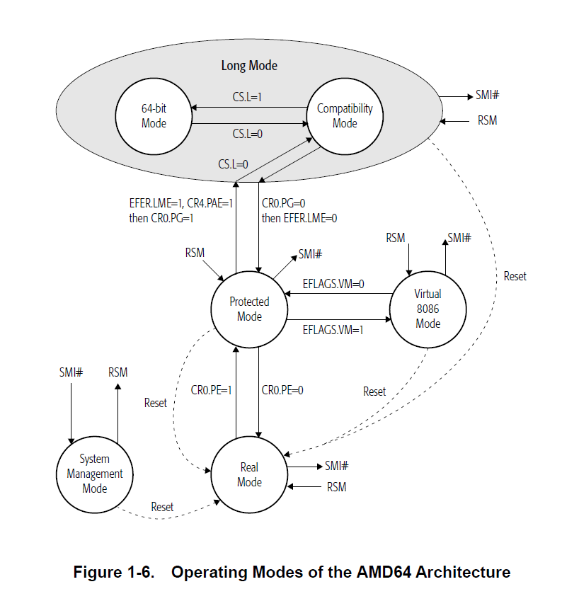

X86-64下关闭MMU
kexec X86-64下的执行过程
kexec的代码是有两部分的，一部分在Linux内核中(编译时需要打开相关的编译选项)，一部分在kexec-tools中。
kexec的流程主要分为两个部分，首先是内核加载，通过以下命令实现
cmdline=$(cat /proc/cmdline)
kexec -l /boot/vmlinuz-linux-lts --initrd=/boot/initramfs-linux-lts.img --append="$cmdline"
-l指定了kernel的路径，--initrd指定了根文件系统路径，--append指定了cmdline参数
接着是开始内核切换，通过以下命令实现
kexec -e
内核的执行入口为/kernel/kexec_core.c的kernel_kexec函数，详细过程如下:
- 通过migrate_to_reboot_cpu将kexec的执行主体迁移到主核
- 通过machine_shutdown发送IPI中断来关闭所有从核，从核最终会执行stop_this_cpu使cpu进入hlt状态
- 通过machine_kexec使主核继续进行后续的流程
machine_kexec相关的逻辑实现位于/arch/x86/kernel/machine_kexec_64.c，详细过程如下:
- 进行关中断，清除断点之类的环境准备工作
- 将relocate_kernel函数的实现拷贝到过渡区域(关于过渡区域的说明，见下文)
- 设置段寄存器，gdt表和idt表为无效状态(long mode下内存访问不涉及段机制)
- 跳转进入relocate_kernel
relocate_kernel的实现是一段汇编，位于/arch/x86/kernel/relocate_kernel_64.S，relocate_kernel接受五个参数，比较重要的是两个，是一致性映射的pgt页表地址，以及处于一致性映射区域的入口地址，至于什么是一致性映射，以及如何实现一致性映射和如何使用一致性映射，见下文部分。
需要注意的是，这个一致性映射区域的入口不是新内核，而是kexec-tools里面的一段汇编，这段汇编位于kexec-tools源码下的/purgatory/arch/x86_64/setup-x86_64.S，入口为purgatory_start(至于如何判定入口为purgatory_start，见参考2)。
这段逻辑最后会跳转到新内核的入口中执行，从relocate_kernel开始的汇编，直到跳转到新内核入口前，主核所做的事情主要是退出long mode，关闭mmu，设置gdt表，进入protection mode，详细过程见下文。
X86-64的CPU模式
X86-64下CPU有以下几种模式:
- Long Mode
- 64-bit mode(Long mode下的一种子模式，系统正常运行的模式)
- Compatibility mode(Long mode下的一种子模式，可运行32位程序)
- Legacy Mode
- Protected Mode(32位程序运行时的一般模式)
- Virtual-8086 Mode
- Real Mode(16位程序运行时的一般模式)
- System Management Mode (SMM，系统管理模式，由外设触发)
模式之间的转换关系，见下图(来自AMD64 Architecture Programmer's Manual Volume 2:System Programming):

X86-64下的内存访问机制
X86-64下内存机制有两个: 1. 段机制 2. 页机制
一般情况下，段机制会首先对地址进行转换，其次才是页机制。相对应的，在不同阶段，内存地址有着不同的名称，分别为: 1. Logical Addresses(虚拟地址) 2. Linear(Virtual) Addresses(线性地址) 3. Physical Addresses(物理地址)
Logical Addresses经过段机制的作用，变成Linear Addresses，Linear Addresses经过页机制的作用，变成Physical Addresses。
内存地址，是一个相对偏移，在不同的坐标系中，同一个内存地址有着不同的偏移值。比较特殊的是物理地址(Physical Addresses)，可以认为是绝对地址(通用地址)。
需要说明的是，段机制在64-bit mode下是没有发挥作用的，因此64-bit运行的一般情况下，虚拟地址就是线性地址。
段机制和页机制的本质，都是对内存在不同坐标系之间进行了映射，如果这种映射是一对一的，即映射前后，没有发生变化，这种内存模式被称之为flat mode，一般用于关闭某种内存机制前后进行过渡。
段机制
段机制发挥作用，需要gdt(idt)表和段寄存器同时发挥作用，段寄存器指向gdt(idt)表中的某一项。gdt(idt)表的切换，通过lgdt(lidt)实现，lgdt(lidt)接受一个十字节的元数据，前两个字节描述表的大小，后八个字节描述表的虚拟地址。gdt(idt)表中的每一项，描述了段的基础地址，段大小，权限信息和控制信息。
以下是一种gdt表的书写技巧，gdt表的第一项通常不用，空出第二项，两项共16个字节，前10个字节用于放置gdt表的元数据，即gdt表中放置了gdt表的描述信息(该表实现了上文所说的flat mode):
.balign 16
.globl tr_gdt
tr_gdt:
.short tr_gdt_end - tr_gdt - 1 # gdt limit
.long pa_tr_gdt
.short 0
.quad 0x00cf9b000000ffff # __KERNEL32_CS
.quad 0x00af9b000000ffff # __KERNEL_CS
.quad 0x00cf93000000ffff # __KERNEL_DS
tr_gdt_end:
当执行完lgdt(lidt)，还需要进一步刷新段寄存器，除CS段寄存器外，都可以通过以下方式实现:
mov 0x18, %ds
CS段寄存器需要通过far jmp实现，需要注意的是，每个段寄存器都存在一个不可见的缓存，只有段寄存器被改变时，才会从最新的gdt(idt)表中刷新缓存，也就是说，如果只是改变了gdt(idt)表，发挥作用的仍然是原有的段表，一般情况下，在段表被刷新后，就应该及时刷新段寄存器，以防止后续进行刷新时，段表地址不可用。
far jmp的实现，有三种方式，分别为: + lret + lcall + ljmp
以下是一种lret的示例:
leaq stack_init(%rip), %rsp
pushq $0x10 /* CS */
leaq new_cs_exit(%rip), %rax
pushq %rax
lretq
页机制
页机制借助pgt表实现，pgt表中存在了多重映射关系，pgt表的切换通过以下方式实现:
movq %r9, %cr3
其中r9寄存器存放了新pgt表的物理地址。
如何关闭MMU
所谓关闭MMU，即无效化页机制，直接使用物理地址访问内存。关闭MMU，仅需要一条指令即可实现。问题在于，在该指令之前，页机制生效，在该指令之后，页机制不生效，但是，PC的值是连续自增的，因此需要在一致性映射区域中关闭MMU。在一致性映射中，虚拟地址和物理地址相等，此时关闭MMU，不会影响PC的自增。
正常系统运行时，使用的不是一致性映射，同理，从原有的页表切换到一致性映射页表，也需要一个过渡区域。在该过渡区域中，既存在部分以前页表的映射关系(页表切换前后的指令所在函数)，也要存在一致性映射区域。
设计上，可以直接在一致性映射页表的基础上，加上原有页表的一段映射。一致性映射的添加，Linux内核通过kernel_ident_mapping_init实现，kexec中相关实现位于/arch/x86/kernel/machine_kexec_64.c中的init_pgtable函数。
因此，关闭MMU过程中，需要经历以下过程:
- 跳转到过渡区域
- 在过渡区域中切换一致性映射页表，并跳转到一致性映射区域
- 在一致性映射区域关闭MMU
如何在X86-64下关闭MMU
X86-64的正常运行模式为64 bit mode，该模式下不能直接关闭MMU。按照手册的描述，Long mode下关闭MMU，需要经过以下过程:
- 进入一致性映射区域(参考上文说明)
- 设置段机制为flat mode，并且刷新段寄存器
- 通过far jmp切换cpu mode为Compatibility mode
- 关闭MMU
- 退出long mode(此时进入protection mode)
- 关闭PAE
进入一致性映射区域可以参考kexec的relocate_kernel，后续流程参考kexec-tools的purgatory_start。